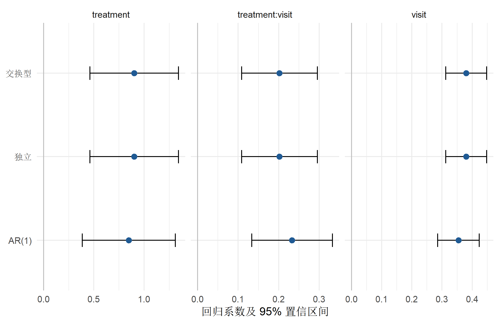

library(dplyr)
library(tidyr)
library(ggplot2)
library(geepack)广义估计方程：相关数据的总体平均效应
从估计目标、工作相关结构到稳健标准误与缺失数据边界
统计分析方法
纵向数据
聚类数据
GEE
系统讲解 GEE 的总体平均效应、工作相关结构、稳健标准误、缺失数据边界与 R 实现
GEE 回答什么问题
广义估计方程（generalized estimating equations, GEE）用于分析同一簇内相关、不同簇之间近似独立的数据，例如同一受试者的重复测量、同一家庭的成员或同一医疗机构的患者。它把广义线性模型的均值结构与一个“工作相关结构”结合，主要估计总体平均效应（population-averaged effect）。
开始建模前，应先确定三件事：
- 估计目标：关注总体平均差异，还是个体特异的轨迹与异质性？
- 簇的定义：哪些观测可能相关？在纵向数据中通常是一名受试者构成一簇。
- 结局分布与链接函数：连续、二分类和计数结局分别对应合适的
family。
GEE 不是“给普通回归换一个标准误”这么简单。均值模型、链接函数和簇定义仍须正确；相关结构主要影响估计效率，而不是替代研究设计和混杂控制。
先判断你需要哪一种纵向方法
GEE、混合效应模型和经典重复测量方差分析都能分析同一受试者的多次观测，但它们不是三种可以只按软件熟悉度替换的写法。GEE 直接建立边际均值模型，重点是总体平均效应；混合效应模型同时描述固定效应与个体或簇间异质性；经典重复测量方差分析则主要服务于共同固定时间点下的组别、时间和交互比较。选型应发生在写公式和调用函数之前。
| 选择问题 | GEE | 线性/广义线性混合效应模型 | 经典重复测量方差分析 |
|---|---|---|---|
| 主要研究目标 | 总体平均的结局差异或变化 | 固定效应，以及个体或簇间异质性、个体轨迹 | 预设固定时间点的组别、时间及组别×时间比较 |
| 效应解释 | 边际或总体平均效应 | 线性模型的固定效应可有边际均值解释；非线性链接下的系数通常条件于随机效应 | 各时间点均值及其对比所形成的总体 F 检验或预设对比 |
| 簇内相关 | 工作相关矩阵；sandwich 方差用于大样本推断 | 随机效应和/或残差协方差结构 | 被试内因子；一元 F 检验通常涉及球形性及其校正 |
| 个体异质性 | 不估计随机效应，不用于个体随机效应预测 | 可估计方差分量，并描述随机截距或随机斜率 | 通常不建立同样灵活的个体随机效应结构 |
| 时间与观测次数 | 可容纳每簇观测数不同；时间表示和 waves 仍须符合设计 |
可处理不平衡和不规则时间，但模型结构必须合理 | 更适合共同固定时间点、数据较完整的规则设计 |
| 缺失数据 | 标准 GEE 的有效性通常依赖 MCAR 等条件；MAR 下需考虑加权 GEE、插补或其他扩展 | 基于似然的推断可在模型正确且缺失机制可忽略等条件下使用部分观测 | 常退化为完整案例分析，失访会减少样本并可能改变目标人群 |
| 重点诊断 | 簇定义与数量、均值模型、工作相关结构、稳健方差、影响簇 | 收敛、奇异拟合、随机效应/协方差结构、残差和外推 | 球形性、校正方法、完整案例变化和交互解释 |
| 更适合的典型情形 | 许多近似独立的簇，目标是人群平均效应 | 需要描述个体轨迹、簇间异质性或进行条件预测 | 共同时间点、近似完整且设计较简单的连续结局实验 |
可以把选择压缩成三个工作流问题：先问结论要落在人群平均还是个体/簇异质性上，再问观测时间与缺失是否规则，最后问准备检查哪一套假设和诊断。若这三问尚未回答，比较 P 值、QIC、AIC 或代码长短都不能替代方法选择。
在线性恒等链接模型中，GEE 与线性混合效应模型的固定效应有时具有相近解释；在 logistic 等非线性模型中，总体平均效应与条件于随机效应的效应通常不相等。混合效应模型能纳入不平衡或部分观测，也不表示它对缺失机制和模型错设无条件稳健；同样，GEE 的 sandwich 方差不能修复错误的均值模型、过少的簇或信息性失访。
工作相关结构
geepack::geeglm() 常用的 corstr 包括：
independence：工作上假定簇内独立；exchangeable：同一簇内任意两次观测具有相同相关性；ar1：相邻时间点相关性更强，并按间隔递减；unstructured：每一对测量可有不同相关性，参数多，对簇数和完整测量要求更高。
“工作”意味着相关结构可以是近似模型。若均值模型正确、簇之间独立、簇数足够多并满足相应正则条件，sandwich 标准误可在相关结构错设时保持渐近稳健；这不表示有限样本中一定可靠。簇数很少、簇大小高度不均或个别簇影响很大时，常规 sandwich 标准误可能偏小，应考虑小样本修正、簇级 bootstrap 或与设计相符的其他方法。
一个有真实簇内相关的模拟例子
下面生成 160 名受试者、每人 5 次测量的数据。随机截距只用于生成相关数据；拟合目标仍是总体平均的治疗、时间及交互作用。
set.seed(20260731)
n_subject <- 160
n_visit <- 5
subject_data <- tibble(
id = seq_len(n_subject),
treatment = rbinom(n_subject, 1, 0.5),
random_intercept = rnorm(n_subject, sd = 1.2)
)
long_data <- crossing(
id = subject_data$id,
visit = 0:(n_visit - 1)
) |>
left_join(subject_data, by = "id") |>
mutate(
outcome = 8 +
0.35 * visit +
0.60 * treatment +
0.25 * visit * treatment +
random_intercept +
rnorm(n(), sd = 1),
id = factor(id)
) |>
arrange(id, visit)
long_data |>
select(-random_intercept) |>
slice_head(n = 10)# A tibble: 10 × 4
id visit treatment outcome
<fct> <int> <int> <dbl>
1 1 0 0 5.83
2 1 1 0 4.36
3 1 2 0 6.04
4 1 3 0 7.13
5 1 4 0 8.06
6 2 0 0 5.62
7 2 1 0 8.78
8 2 2 0 8.24
9 2 3 0 9.29
10 2 4 0 8.84在 geeglm() 中，同一 id 的记录应连续排列；waves 用于明确簇内测量顺序，尤其适合 AR(1) 或有间断测量的情况。
拟合并比较相关结构
gee_ind <- geeglm(
outcome ~ treatment * visit,
id = id,
waves = visit,
data = long_data,
family = gaussian(link = "identity"),
corstr = "independence",
std.err = "san.se"
)
gee_exch <- update(gee_ind, corstr = "exchangeable")
gee_ar1 <- update(gee_ind, corstr = "ar1")
summary(gee_exch)
Call:
geeglm(formula = outcome ~ treatment * visit, family = gaussian(link = "identity"),
data = long_data, id = id, waves = visit, corstr = "exchangeable",
std.err = "san.se")
Coefficients:
Estimate Std.err Wald Pr(>|W|)
(Intercept) 7.78015 0.15830 2415.55 < 2e-16 ***
treatment 0.90188 0.22479 16.10 6.02e-05 ***
visit 0.37996 0.03459 120.66 < 2e-16 ***
treatment:visit 0.20195 0.04771 17.92 2.31e-05 ***
---
Signif. codes: 0 '***' 0.001 '**' 0.01 '*' 0.05 '.' 0.1 ' ' 1
Correlation structure = exchangeable
Estimated Scale Parameters:
Estimate Std.err
(Intercept) 2.566 0.1725
Link = identity
Estimated Correlation Parameters:
Estimate Std.err
alpha 0.642 0.02877
Number of clusters: 160 Maximum cluster size: 5 这里的 sandwich 标准误在 summary() 输出中用于 Wald 推断。系数含义由均值模型决定：
treatment：visit = 0时两组的总体平均差异；visit：对照组每增加一次访视的平均变化；treatment:visit：两组随时间变化斜率之差。
extract_gee <- function(fit, model_name) {
coef_table <- summary(fit)$coefficients
tibble(
model = model_name,
term = rownames(coef_table),
estimate = coef_table[, "Estimate"],
std_error = coef_table[, "Std.err"],
conf_low = estimate - qnorm(0.975) * std_error,
conf_high = estimate + qnorm(0.975) * std_error
)
}
gee_results <- bind_rows(
extract_gee(gee_ind, "独立"),
extract_gee(gee_exch, "交换型"),
extract_gee(gee_ar1, "AR(1)")
)
gee_results# A tibble: 12 × 6
model term estimate std_error conf_low conf_high
<chr> <chr> <dbl> <dbl> <dbl> <dbl>
1 独立 (Intercept) 7.78 0.158 7.47 8.09
2 独立 treatment 0.902 0.225 0.461 1.34
3 独立 visit 0.380 0.0346 0.312 0.448
4 独立 treatment:visit 0.202 0.0477 0.108 0.295
5 交换型 (Intercept) 7.78 0.158 7.47 8.09
6 交换型 treatment 0.902 0.225 0.461 1.34
7 交换型 visit 0.380 0.0346 0.312 0.448
8 交换型 treatment:visit 0.202 0.0477 0.108 0.295
9 AR(1) (Intercept) 7.82 0.162 7.50 8.14
10 AR(1) treatment 0.849 0.236 0.386 1.31
11 AR(1) visit 0.355 0.0352 0.286 0.424
12 AR(1) treatment:visit 0.233 0.0509 0.133 0.333gee_results |>
filter(term != "(Intercept)") |>
ggplot(aes(x = estimate, y = model)) +
geom_vline(xintercept = 0, colour = "grey75") +
geom_errorbar(
aes(xmin = conf_low, xmax = conf_high),
width = 0.16,
orientation = "y"
) +
geom_point(size = 2.5, colour = "#1f5a94") +
facet_wrap(~term, scales = "free_x") +
labs(x = "回归系数及 95% 置信区间", y = NULL) +
theme_minimal(base_size = 12)
不同相关结构下结果相近，只能说明这组模拟数据中的结论对这些设定不敏感，不能证明某个结构正确。
如何选择相关结构
相关结构应首先由数据生成过程和测量时间决定，而不是只看拟合优度：
- 同一家庭或医院内没有自然顺序时，交换型结构常有合理解释；
- 等间隔纵向测量且相关性随时间距离下降时，可考虑 AR(1)；
- 测量次数少、簇数充足时，可把非结构化相关作为候选；
- 独立结构可作为基准，但可能损失效率。
geepack::QIC() 可比较同一均值模型、同一分析样本上的候选工作相关结构。QIC 是辅助信息，不应覆盖研究设计，也不能用来在大量均值模型间无约束筛选。
rbind(
independence = QIC(gee_ind),
exchangeable = QIC(gee_exch),
ar1 = QIC(gee_ar1)
) QIC QICu Quasi Lik CIC params QICC
independence 2069 2061 -1026 7.844 4 2069
exchangeable 2069 2061 -1026 7.844 4 2069
ar1 2070 2062 -1027 8.265 4 2070二分类和计数结局
二分类结局通常使用 family = binomial("logit")。指数化系数是总体平均比值比，而非风险比。若研究目标是风险比或风险差，需要选择相应链接函数并检查模型能否稳定收敛。计数结局可考虑 Poisson 均值模型，但仍应检查过度离散、零膨胀和随访时长，并在需要时加入 offset。
缺失数据的边界
常规 GEE 不能因为使用了稳健标准误就自动处理信息性失访。对纵向结局而言，标准 GEE 在完全随机缺失（MCAR）下通常有较直接的有效性保证；当缺失依赖已观测历史（MAR）时，完整记录 GEE 仍可能有偏。可根据研究问题采用逆概率加权 GEE、多重插补或联合模型，并明确：
- 缺失发生在结局、暴露还是协变量；
- 缺失模型使用了哪些既往信息；
- 权重或插补模型是否与分析模型相容；
- 对不可忽略缺失（MNAR）做了什么敏感性分析。
建模前后的检查
建模前
- 检查
id是否唯一标识簇，记录是否按id和时间排序； - 画出个体轨迹和簇大小分布，核对异常时间顺序；
- 预先确定均值模型中的非线性、交互和时间表示；
- 统计实际簇数，而不是把总观测数当作独立样本量。
建模后
- 报告簇数、每簇观测数范围和分析样本；
- 检查收敛、残差、影响簇及估计相关参数；
- 比较有科学依据的相关结构，说明主分析与敏感性分析；
- 簇数较少时，不依赖大样本 Wald 检验给出过强结论。
推荐报告内容
一份可复核的 GEE 报告至少包括：
- 结局分布、链接函数和均值模型公式；
- 簇变量、时间变量、工作相关结构；
- sandwich 标准误及任何小样本修正；
- 回归系数或指数化效应量、95% 置信区间；
- 缺失数据处理和相关结构敏感性分析；
- 对效应是“总体平均”而非“个体特异”的解释。
参考资料
- Liang KY, Zeger SL. Longitudinal data analysis using generalized linear models. Biometrika. 1986;73(1):13–22. doi:10.1093/biomet/73.1.13
- Hu FB, Goldberg J, Hedeker D, et al. Comparison of population-averaged and subject-specific approaches for analyzing repeated binary outcomes. American Journal of Epidemiology. 1998;147(7):694–703. doi:10.1093/oxfordjournals.aje.a009511
- Gueorguieva R, Krystal JH. Move over ANOVA: progress in analyzing repeated-measures data and its reflection in papers published in the Archives of General Psychiatry. Archives of General Psychiatry. 2004;61(3):310–317. doi:10.1001/archpsyc.61.3.310
- geepack 官方手册与函数索引
- geeglm 官方参考文档